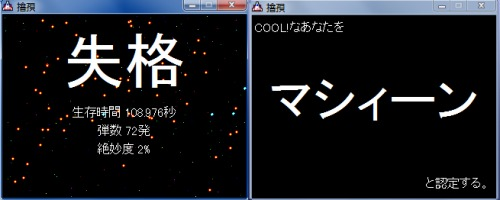
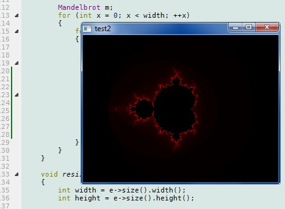
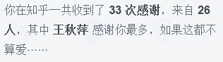
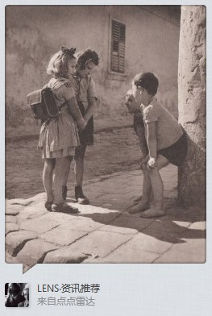
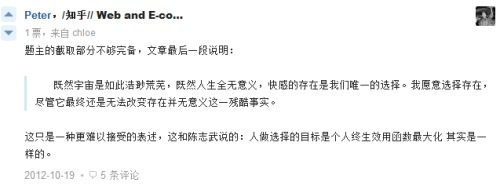
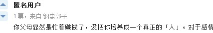
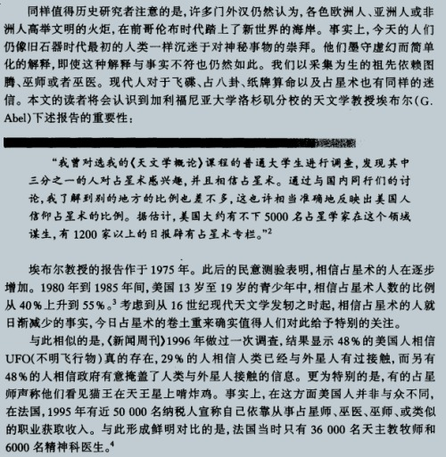

酣睡间也不知是被摇醒还是吵醒，外面踢踢踏踏炸作“地震啦”，，
有那么瞬心里竟一丝慌乱
这他妈，咋还越活越胆小了
补班的同学都打电话过来问候，我很惭愧
爸电话时说你没给2peng打个电话问问，我一愣才发觉自己竟连想都没想到，禽兽
这时打过去倒好像号不在了，这。。。
生了病的这几天，
听到窦唯的《窗外》，忽然几欲哭了出来
11:52 2013/4/10
那日照相，碰见大姨妈聊起不想再去实验室，我也如此说，只是嘴上虽说心下其实并拿不定主意，，意愿上是不想做了，可现实里看上去没任何不做的理由——刚在知乎看到第一条问答就是(问免了，答是)”投入时间和精力，在一年内只专心做一件事，不要想起他的，很快就会小有成就“
”小有成就“我是不哂的，不过明白自已一直以来习惯和舒服的就是专注于一件事情上，比如一个礼拜里基本上只去看一处书写一个程序，那种沉浸很舒服
我想着去跟老贾实话实说，又耽自己言语无能表达不出自己的状态，想来想去浮在脑里的一句只是”没了热情“，，那么人家问你原因呢？
哦，可能是懒——可是不像，自己此前的几年一直能沉浸又是何故？可能是压力(也许自己臆想的莫须有的压力)，看到眼前头就是社会的入口，自己放大了社会中的险恶，而几年来所做的事情又没达到自己本预想的程度，于是焦躁，，现下的一点就是杂事很多，千头万绪而大多又成为”任务“的模样，自己是从来不喜做”任务“的，只想做自己感兴趣的东西
哦，还有一点是意识到自己眼高手低后已经能放低心态去扎扎实实地写程序，之前进实验室说过的一条理由就是发觉一个人搞搞来搞去搞了不少却又没写出过什么实在的东西，，而现在明白了问题所在也能开始着手解决，实验室不合自己性子的一面立时放大地显现出来
是的，不喜欢”压力“，虽然不排斥”责任“，但始终最能使达到自洽状态的还是随性而做着感兴趣的事情，并专注，并沉浸
要改这样的性子么？能改？何必要改？
都已是早前的日子里已把知乎上的签名改成”价值观丧失中“，当时可能有点夸大其词和意淫出的所谓危机——但后来危机不见其实暗地里自己真地在蚕食掉从前价值观中的一砖一瓦
真是的，自己到现在为止的微小生命中惟一在乎的就只责任和兴趣了，责任又很小众，大抵只牵涉到了自己的亲人，，曾经那么洒脱地不屑他人看法，现在么，屑也只因着要顾全责任的实行，，但困惑的很呢

电影靠导演，电视剧靠编剧
@潜伏 赞一个
几时走得掉
19:49 2013/3/2 (http://twiispa.com/post/2013-03-02/40048103272)
怎么变成抱怨了
我是疑惑，和拿不定主意是要钻营爬上体制的上部呢还是随心只选择自己愿意选择的
比方我想给妈买辆二十万的车，如果不是这茬那我自己足温饱就没啥更多诉求，就满足于当个所谓码农而不会在心什么往公司上层爬，我没欲望创业没欲望实现社会中的人生价值啊
那么成熟应该是？估计确实是视之过于险恶了。你如果这茬坦然了就聊聊你对责任的理解吧
善这茬你聊远了。我说的与人为善还没到“善恶”里的善那种程度，，
你那说的“明辨善恶”究竟指的是神马？我的理解里这处的“善”和“恶”都是挺重的词，现实里我想不到有什么称之为“恶”的东西
@驾照 这事儿真心很坦然的，感慨的只是想到假若我们不是处于社会底层那么类似的麻烦就都挥手即散——所以这仿佛是向链条上端爬的理由
其余无话
以上
12:08 2013/3/2 (http://twiispa.com/post/2013-03-02/40049173369)
本来的意思是“责任”，，一辈子须妥协父母的意愿，结婚后须妥协另一半的意愿，生子后须妥协孩子的意愿，，旁人本是不必顾忌的，但因着这些妥协，社会生活中总须弯折成一幅本不是自己的姿态
“人生而不自由”，空说这一句不足以传达，，高中我们不是忍受了，大学不是终于上来了，，回头看，许多人的眼睛看，不是个事儿，可是放在略有些完美主义作祟的我们这里，就很失望人生并非本的臆想，而幻灭
寒假回去第一天就驾校，朝九晚五直像回去了高中，且忍受那边教练师尊样的咄咄，跟着同学的一帮人在那装腔作势，，考试因着完全他人的失职挂掉，却还得听闻体制上端们的恶声恶气
我疑惑的很，想要与人为善想你们那些毫无必要地恶毒是怎么个回事
而我知道有那么一部分人的特权可以无视这许多下层人民的磕磕绊绊，而我长大了之后发觉我们的父母就是这个社会中属于下层的那一部分
无法不想到自己，如果单只自己我可以摒弃掉很多烦恼于旁人的藩篱，可是如果我的孩子也要去忍受荼毒的高中而我却无法给他方便，可是如果我的妻子在体制中被欺侮而我却只能愤愤然了事——这是责任和不自由的意思
获得自由有两种途径，一种出世，纷繁尘世不扰，可这只能是你一个人的选择，，背负了责任之后，社会链条里只好越往上攀才越能“想不做什么就不做什么”
我还想给妈妈买辆车，我还想我的孩子不去忍受我曾经忍受的
是的，我是在苦恼这个
16:30 2013/3/1
努力啊，拼搏啊云云，究、竟、what、for？
知乎里yolfilm一篇回答(http://www.zhihu.com/question/20545592/answer/15437348)，还用到“譬如朝露，去日苦多”，，可我又真的是疑惑了，我们在拿生命换什么？
也许未尝山高之前确是没资格说“我不要”，而且还在花着父母的钱的时候也没资格说“这样的生活就够了”（因为撤掉这一笔来源你并不能过上这样的生活），，那么自己挣钱之后是不是可以说我不欲追求那许多人人都喊着要追求的东西？因为越多欲望越多烦恼，通向因富足而自由的路不定性价比很高，，可是淡泊又大约只能是一个人时候取之无妨的态度——fuck，哪怕不结婚不生子都还有父母在那里，，人生而不自由
我知道这些疑惑在这里涂涂抹抹是没用的，所以才想多看些书，最不济也是认识多一些的价值观，，看清世界才能更坦然地追随自己，，呃，反正图样图森破的我目前只能想得到这一条办法(跟现世的人多交往啊之类我怕有内容有见识的人的密度太低)，大伙谁有建议不妨提提
PS：狼王你那很少在啊，，有话欲说而无机会说久而久之的后果恐怕就是无话可说——且罢，可能我这段时间摊平了什么事都不做才有这闲心思，做起事情来不定就又是另一个模式了
来了几天仍没转掉模式，身上累，心里也懒乎乎空洞洞，，饭总觉得吃不饱，一溜儿地想喝甜东西
...
《李黄》 “空注水...唯有头存”
《西湖三塔记》 开膛破肚取心肝
《警世通言》 “若生外心，教你满城皆为血水”
《雷峰塔传奇》 端阳、求草、水斗、断桥
田汉《白蛇传》
你忍心将我伤，
端阳佳节劝雄黄。
你忍心将我诳，
才对双星盟誓愿，你又随法海入禅堂。
你忍心叫我断肠，
平日恩情且不讲，不念我腹中还有小儿郎？
你忍心见我败亡，
可怜我与神将刀对枪，只杀得云愁雾惨、波翻浪滚、战鼓连天响，
你袖手旁观在山岗。
手摸胸膛你想一想，
你有何面目来见妻房？
《新白娘子传奇》
青城山下白素贞
洞中千年修此身
勤修苦练来得道
脱胎换骨变成人
一心向道无杂念
皈依三宝弃红尘
望求菩萨来点化
渡我素贞出凡尘
嗨呀嗨嗨哟 嗨呀嗨嗨哟
渡一渡我素贞出凡尘
嗨呀嗨嗨哟 嗨呀嗨嗨哟
渡一渡我素贞出凡尘
http://www.xiami.com/song/showcollect/id/16438987
“了却一桩情缘”
半个暑假重温完《新白娘子传奇》，92年的电视剧，四岁时候看的，二十年后重看，却觉着比如今好多电视剧都有意思，，因为干净，还因为戏一样的含蓄——可是倒霉，30某集以后换了编剧，瞬间跌到三流电视剧的水准，忍着一口恶气看完，遗憾不已
寒假里的事都没甚么想提的，再去学校是离社会又近了一步，，可这心里仍然一个洞，王小波云“还要有一个诗意的世界”
谁知道呢，略知社会险恶，和个人无力时极大的不自由，，两种办法，一种好好按着规则玩，玩到有了足够的能量，一种摒弃这种种，堂皇了说叫“无欲则刚”
走着看吧，估摸着代价来选择——途中却总要还给自己不断了粮食
JD了有木有
前卫不，听着多牛逼

明儿得试试做事情了，，倒不是担心寒假荒废，这次歇歇也没啥不好，只不过有任务在
任务，哎，，现在的人生就是责任和兴趣，哪天兴趣没了可怎么办
看点儿书，看点儿书，四周围缺氧了已经
今儿出校门吃饭竟然听到Blue Foundation的《As I Moved On》
@吃惊
音乐接着mark，因为发觉动不动就不知道听啥了，结果fm一跳出来才发觉几个月前自己听某某张听得挺high
说唱俑 2014-10-05 18:47:01
金武林 2014-09-17 22:00:01
苏阳 2014-09-17 21:59:52
The XX 2013.7.13
万能青年旅店 2013.6.30
兰 - 邵容 2013.1.9
蝶舞 - 黄雅诗 2013.1.10
三颗猫饼干 - 何真真 2013.1.10
恋恋温泉 2013.1.10
Young for You - Gala 2013.1.10
谢天笑 2013.1.10
左小祖咒 2013.1.10
张悬 2013.1.10
窦唯 2013.1.10
范晓萱 2013.1.12
日光倾城 - 卡奇社 2013.1.11
是谁 - 这位太太 2013.1.11
Miss November - 女孩与机器人 2013.1.12
Lenka 2013.1.10
The Cranberries 2013.1.10
Dolores O'Riordan 2013.1.10
We Started Nothing - The Ting Tings 2013.1.10
Early Times - Love Psychedelico 2013.1.10
Show Your Bones - Yeah Yeah Yeahs 2013.1.10
Light Me Up - Taylor Momsen 2013.1.10
Sweep Of Days - Blue Foundation 2013.1.12
Mono 2013.1.10
All Around Us - Miaou 2013.1.10
甜梅号 2013.1.10
God Is A Astronaut 2013.1.0
The Cure 2013.1.10
Oasis
Nirvana
Pixies
Joy Division
The Doors
fm给到一首《旺天下》，真特么好听，，飘飘飘....
爽
今儿早上听到某处时瞬间就high了，，音乐，哦音乐！

哈哈
刚把OD里补班的那部分看了，回这里清亮的页面感觉简直像是去某个荒芜之地逛了一圈
是的，那还只是黄昏的和废墟的暖色——真正黑暗和带血的是标着SMX的那几部，，而甚至也还未完全
生命呵... 我竟然想起海子
http://blog.codingnow.com/2007/09/poisson_distribution.html
http://blog.chengyichao.info/2011/05/03/poisson-distribution/
两篇别人的blog，看完基本懂了泊松分布是怎么来的了
有什么用？我不知道，起码现在还没实实在在地用到过——但已然可以想见将来的某时会一而再地用起

你猜我想到的是啥？“站街”。。。。
“他们说，那些年，黄瓜是用来吃的，，种子也是用来种的”。。。。
这篇本来是给twiispa的博文回复，但内容不能超过500字只好放这儿了：
一个建议：别把“务实”和“理想”划分得那么极端，，这是我们曾经用的二分法，那时候我们知道得还太少，只能看到我们极度厌恶的那个现实和极度渴望又不知道在哪里的那个远方，，而新的世界观不是这样的，立在正中的最大的那个建筑叫做“现实方法论”，它非常复杂，复杂到甚至有了美感，当然我们可能不必完全玩转，但必须跟它打交道，，这是宿命，是强加的要求——强加是什么意思呢？不是你决心决裂了就能摆脱的，这要求就像你身为一个生物而被强加了的必须进食的要求一般，，我们一定要明白面对这样的要求时，除非你魄力到一死了之否则任何形式的拒绝都是借口和退却，且你不可能实现这退却，只要你活着你就还会被拉回去面对它，只要你不接受并handle它你再怎么逃也还是要被拉回去面对它，循环往复。
当你发出“我太痛苦了”的声音时，你总可以甄别出这声音所传达的背后的行动的决定（没有行动的声音是咱们少年时期才玩的游戏吧），然后你就总可以衡量这行动的后果是否带你向自己选定的方向又前进了一步。你说没有？你说只是你很确定这不是你要的方向所以你得换个方向？你怎么知道三百六十度方向尝试完了会不会竟然都不是你想要的呢？——哦，对，尝试不完的，，你尽可以一辈子这么尝试下去而最终也找不到，而这个过程更可能的结果是在不断尝试的疲劳中跟现实讲和，这岂不是更悲哀的故事。
我必须提到“浅尝辄止”这个词，现实里的事物不是看一眼摸一摸就能下结论“我不想要”的，你没有走近了走进去，进去以后你才能看到它的模样一直在变化，甚至根本已经不是你最初以为的那个事物，想不想要的结论也就从此再无那么斩钉截铁了。（举个例子，“虚荣”是八百年前就被我们摒弃了的，而且到现在“虚荣”这个意象在我们这仍是世界观里很实在的一个存在，我们知道它是什么知道它长什么样很确定地知道我们不想要它。但，我不确信未来的某时这个意象会不会因为自己世界观的重构就消失掉，就像量子力学的建立消失掉了电子轨道的意象一样）
所以保持谦逊，别那么决绝地说出要什么不要什么的决定（这样等你发现拒绝了之后却又被拉回去面对的时候也就不至于那么吃苍蝇），以及在面对这个世界的时候，stay foolish, stay hungry
（其实昨天已经尝试对最近写个总结，三两句下去觉得不在状态——实话说是很久没在过状态了——无疾而终，，今天还是拾起来）
倒着来吧
昨儿的下午是实验室的一个会（去了之后碰到的第一次这种会），俩同学之前准备的从学术期刊上找来的论文，消化消化，会上给所有人讲。
架势颇大，十个人围着一小白板把实验室那一隅坐得水泄不通。
实验室也就我去的几天里呼噜呼噜进了仨人，总数到达十个（研究生1匹，大三5条，大二4只成分中包含50%X染色体）。老贾（老师）曾三五番或明或暗地暗示他的实验室是研究型实验室，只要精英，嚷嚷说现在10个人已经管得头都大了。
好吧，我知道自己这次能进去是沾了不少便宜：
一，内推。薛跟老师那讲了我的不少好话，进去后还没等做什么事老师已经被灌输了个“此人堪用”的印象了；
二，时机不错。去的时候他们正好开发这个VIP( Versatile Image Platform )项目，正好才搭起了一个框架，要多不多有充足的任务去做，要少不少正好把前期代码看了对于他们怎么做有个实实在在的印象，，还恰好撞上他们代码中一处性能瓶颈而自己改进了下给提高了，于是两三天已俨然团队一员了（VIP之前是他们大三中的三个人做，其他人要么赋闲要么打散工）
三，Qt。这个只能说是撞上了，正好自己学了点Qt正好他们的开发用的是Qt，正好他们写的那部分又算是自己能跟上的（大部分是界面部分，算法按老贾的说法就是下学期末才真正开始了）
原谅我似乎字里行间捎上了自命不凡的味道，我不是真这么想的，，这茬事发展到现在我只想说感到自己很幸运。可能背后有点“机会只给有准备的人”那种？但我真没觉得自己准备好了，我觉得自己老是在准备呢，知识那么多一个人怎么可能准备得好，，放低姿态也不是有意识地想逃避责任或呈现对比度，咱确实不聊这个——总的矛盾是童年延续至今的做事风格跟“社会为人”要求的冲突，，哎呦，跳得有点远貌似，容我慢慢来，那个会还没聊完呢（虽然可能并没什么有趣）
会上报告的都是图像算法，一个什么“基于熵的图像分割”，一个什么“鲁棒的偏微分方程梯度图像修复算法”——挺唬人的，是吧，，我也被吓住 了其实，要知道自己高数还挂着呢人家直接拿学术论文开聊了。但其实没什么担心，这种报告的性质自己感觉就是个点点新闻，大家脑子里存个影知道所谓的那坨领域里发生了什么——真正的学术是研究生博士那阶段才做的，要我们弄懂也都没那个本事没那个积淀。于是报告里聊得还是想法，除了把几个公式写上去吓吓人以外（因为除了研师兄其他人恐怕都看不懂）就没别的了。（顺便提句，自己下下个礼拜也要做这种报告，压力倒是不大只不过从来没弄过所以怎么弄略虚）
报告完了就变成老贾飘根烟在那开始侃，真是侃，讲自己怎么从工厂做工的到后来研究生，聊学校一肉质检测的项目，扯到日本的环保问题（住宅区干净到没苍蝇，因为苍蝇没吃的...-_-b），聊三网融合，扯到甄嬛传乃至某个俺记不到名儿的电视剧里信陵君跟某某的“感情纠葛”（原词复用，听一博士在“研究型实验室”聊这东西真是太违和了），，当然后来也聊了点正事，图形图像技术的领域啊咱们实验室做的范围啊你们可以去选择的方向啊，关于VIP之前模糊不清的几个需求这次给明晰了下啊，细节了就不展开了（其实好像记得以前自己写日记会事无巨细地铺展？）
三点开始的会结束时已然六点了，跟骨感周旭伟谢盼出去把饭吃了，回来实验室近八点开始写点代码，结果不知怎的人整个状态有点飘，打了吗啡呢还是啥回事，，反正没弄出什么来，，就到今天了
前天的晚上老贾请吃饭，九个男的一共干了三“件”啤酒（36瓶），还好，没倒，，饭完了KTV，——哎呦我去这些真是没求意思
再前，再前，那就是自己刚进去拿了项目的代码全天运转在那琢磨了，以及偶尔被自以为他们写的好丑的代码给烦躁到，重构一些不够漂亮的设计时被各模块之间的耦合给糠掉——不断在“施加自己所谓‘更优’的实现”和“放低调忍一忍维护团队状态学习团队合作”之间摇摆不定，倒总之是走过来了，，必须说期间学到了不少东西——而且不是那种google、wiki可以学到的东西，这部分是确实得经历吧（前提自己欲要/被要求要跟这个社会打交道的话，擦我这老是念念不忘嚷嚷自己长期在分界线那一边呢，你老怕别人不知道还是怎的）
再前就到了为什么要做出进实验室这样的动作了，，现在已经忘了确实的楔子了，大地讲就是“慌了”，想到自己特么都大三过一半了还一点五年就毕业了看看人家招聘启事或者哪怕不说招聘就是最宽泛的跟这个社会打交道最主要的要求是你自己定下的“独立”这些个你都拿什么去fufil啊？长吧，也专门没断句一坨浆糊跟那几天自己的状态差不多意思——然后就是各种动作想做点什么来填补自己了，定向的，兴趣省省，，具体的动作们我也记不清了（或是懒得去记忆里翻腾了），最终结果就是进了这么个实验室，和到目前来看状况还不错
不作氛围结尾了吧，本来也就写得跟日记似的，，fuck写这么长的东西真是累，现在都没存留什么表达的快感了——当然我用词过度了这根本就不是“表达”，，不过哪怕有时能表达的时候自己还是觉得有更。。。更worth的事去做，，，应付这个世界是要的，追随自己的心也是得要的，作为成人，不是孩子，所以得自己扛起来面对客观的任务，而又作为人，活给别人活给这个世界一辈子就太不值了，所以也留着自己的园地去追
哎呦一不小心写成结尾了
http://www.zhihu.com/question/20656981
一口气看到快完（所有答案） ，跟看故事似的——比看故事还过瘾，，
虽然我这temporary观念“人生唯一能确定的是为了精神愉悦”并不打算抱持下去，但真很感谢人这生物有这种功能

哎呦，跟自己的想法撞车了，，而且撞的李银河，还算不错吧
阿三的鸟语实在听得人蛋疼。。。。。。。。
还是沉浸入一个事里舒服，到家的感觉
跟社会搅真是又累又烦躁
“民主和不发生饥荒之间的因果联系是不难发现的。在这个世界的不同国家中，饥荒杀死了数以百万计的人们，但却不曾杀死统治者。国王和总统、官僚和各级主管、军方的领导人和指挥官，他们从来不是饥荒的受害者。如果没有选举，没有反对党，没有不受审查的公共批评活动空间，掌权者就不会因为防止饥荒失败而承受政治后果。而在另一方面，民主却会把饥荒的惩罚作用传递给统治集团和政治领导人，这就给了他们以政治的激励因素去试图防止任何有威胁性的饥荒。”
http://talk.ifeng.com/online/study/detail_2012_11/30/19704807_0.shtml
http://movie.douban.com/review/1036688/
我不相信专制，也不相信“ 以智囊为辅助的精英统治集权政府”，民主是个目前看来较靠谱的路子，虽然俺还不敢说明白了“民主”究竟是什么，，保留对近乎科幻程度的极权的念想
以上
2012-12-9 9:46
昨晚看穆赫兰道，忽然想到可以去找些精神疾病之类的书看看——你摧毁了常态价值观与非主流价值观之间的篱障，下来如果不建立新的判断标准，这就真是丧失了，，极端状态有助于辨识判断标准
看知乎的这个问题，想到关于“我识”的一个很形象的阐释：没有“我识”的动物一生就像玩一个第一人称射击游戏，every thing is viewed from a hole；而具有“我识”的 生物，它能头脑中建立起一个RPG的模型，除第一人称射击的能力之外，它还能摹想到高空地图视角似的第三人称，在其中它自己也是客观环境的一个组成部分。
昨晚转角回宿舍，脑子里忽又冒出那个词，“皮囊”，黑乎乎地在那么零点五秒间猛撞上来，退弋，猛撞上来，三番五次。
——原来我是想到源头了，忽然瞥见了“皮囊”这样灰暗的世界观是怎么来的；；我们曾经是无法无天地乐观着的小孩子，自信心爆棚，看周遭都是从“自己”发出去的射线，，比如某时我们还以为自己是天才，某时乐在其中地畅想光明自由的未来在那未来里芸芸众生都是背景里聒噪的元素我们自己站得很大，，我们捣鼓出一些很引以为傲的思维的珍宝比如我们唾弃虚伪，比如我们称呼起一眼望去能望到的望不到用自己脑补的那些皆为“俗世”，我们爱憎我们好恶，我们觉得一整套的价值体系建立起来建立得很宏伟，可与任何人为敌可与任何人为友，未来看去就是实践我们那光辉的准则，，，但有一天(修辞了，当然不是有一天)忽然意识到，不对，我们以为的那些珍贵的准则也许并不是珍贵的呢？我们想当然地嘲笑“大众”，但竟然忘却或者忽略了“大众”是个根本不存在的实体，，当你丢给乞丐一块钱时你不能自持地得用“大众”观念套用一下自己，善——然后你反思到当你一手扣着手机一手插在口袋的时候你会仅仅因为麻烦而翩然走过同样的那个乞丐，或者你用那“深刻”的世界观告诉自己某些年轻力壮的乞丐要自食其力？乃至引用马尔塞斯的理论说用施舍和重新分配财富的手段只能使穷人更穷？——罢了吧，这些就是借口，你没想明白也想不明白，你的行为就是自相矛盾不一致的而非你脑补的高尚啊深刻啊什么——哎呦，能意识到这一层说明我在思维的道路上走得很深？——罢了吧，你又绕回那种恋自癖的沾沾自喜和滑稽的犒劳自己了——但我意识到这一层之上的这一层了——罢了吧——但——罢了吧。。。这样的递归无限地进行下去，你已然必定无法得出你是一个不说不错哪怕一致、还行也算不上的人/思维体了，你能得出的唯一结论只是这就是一不足惜的破皮口袋，里面装着些根本不值拿出来说的东西。你就是个皮囊而已。
怎么竟扯到这里了？“反思”，哦对了，“反思”。反思也需要反思，你一想，那个一致还能指着别人的形象就破碎了，停不住，又滑去了皮囊。
但过气了不是？此以前的三年五年二十年你还有着躺在摇篮里踢打扑腾的资格，呱呱这些思维的、哲学上的故事。停了罢！至少不能再一门心思扑在这些东西上面。现实要求你行为，尽管你那么炽热地渴求无知无觉不必妥协的自由、幸福。你要求自己的同时也延伸着想着得要要求那些你亲近的人——宿舍这些每天游戏到昏天黑地的家伙们用得着你要求么？生活圈中碰到的其他那些五光十色的形形各色人等们用得着你哪怕吐露一个字儿么？因为你对他们没有一丁点儿良心上的愧疚，他们哪怕洪水滔天地生生灭灭呢也只是背景，不聊他们。
我们说的是现在做的这件事情，以及这背后的那整个愿景。哲学上的观念上的故事已经聊得太多了，聊到糠了稀释了再聊也毫无助益于完成哪怕一丁点实在的什么。既然要的是“做”，那么收起一切不是看得见摸得着的除了行为之外的离地的部分，给自己一个新的固定的姿势，哪怕过火呢。因为难道除此之外你还想落回去旧的故事里么？
关于风格的问题我可能并无资格多说什么。生命中的所有内容甚至不能划分成一件件“要做的”事情这么简单，不一样的世界观里看去的模样也不一样。我希望的是对于如果确定的一个东西，它有确定的表观、确定的目的、可确定的衡量标准，那么我们也保持同步的一致的确定的姿态。这同步和一致需要沟通，是的，这没有问题。做事情的方式，对于不同的事情有不同的做法，如果我们能统一对于某件事需要新的做法，那么改一改从前的做法不也是可行的么？放弃不放弃之类是跟外人陌生人打交道时的掂量，咱们这一句话说定了就不用再考虑。
那句话是“以大多数人的努力程度之低根本轮不到拼天赋”，什么是努力？在精神的世界里没有这种东西，“努力”不是个静态的拿出来放桌上看的东西，“努力”也不是我们脑子里不断构想不断意淫出壮观的惨烈的图景后肾上腺充血后的精神高潮，，“努力”是很贴地很不fancy的行动，你每天在屏幕上敲出1000行的代码，去google，去wiki，去stackoverflow，去搞懂那些不懂的具体到“python的decorator是什么”这样的问题，这些行为，叫做努力。如果只是摹想我有一天可以达到翻译文学作品信达雅，不用字幕无障碍听懂公开课，跟鸟人流畅交流email——这样的摹想太容易，也太容易高潮，然后，你还是今天尝试了半个小时的书虫第二天忘却掉，去逛知乎去翻点点去无论干什么但就是没有实践英语的这茬，一个礼拜，一个月，一年后你发现自己点点滴滴也做了不少，但似乎没有到达曾经摹想的图景？这叫做没努力。 天，这实在是具体贴地到你可以录下自己每天生活回放时贴上标注然后铁板钉钉地判定是“努力”还是“没努力”的事情——难道面对这样的事情时我们还要在那闲扯个性天赋氛围之类的空无物么？
回到原点，不同的世界观望出去的世界不一样，我看来一个尺度一个形态的事物你那边看来是另一个尺度另一个形态，，
最终既然要一起做，就统一起来，统一并且把思索变成物理世界看得见的行为上来，，否则我们还是要一事无成
以上
和也或许是自己堂吉诃德了，故事没那么波澜只就是方法论上约略那么点错位，，我能想象用个什么办法同步之后大家还是稳稳地往前走，也不过一个过程
于是没什么担心了，等回来，故事接着讲，明天和明年和此后的有生和一个叫做未来的东西，坐着还是站着它都带着你淌，，我们小生物着急那些麦糠干嘛呢？
以前还敢和有底气在知乎上大肆点反对，，现在茫了，比如这句：

因为。。。你妹的，对“人”究竟是个什么东西动摇了
[1] http://www.zhihu.com/question/20619379
《铁西区》，闷得杠杠的，，改日再战吧

人类（作为个体）没有进步，进步的只是整体的这个有机组织
总有一天，（也许就不久的将来，500年？2000年？）人类个体的生物学局限性将成为人类文明无法继续前进的羁绊
如果要继续走下去，恩。。。将人改造成非人——担心什么，低熵体一直以来赖以自豪的不也正是变化么？